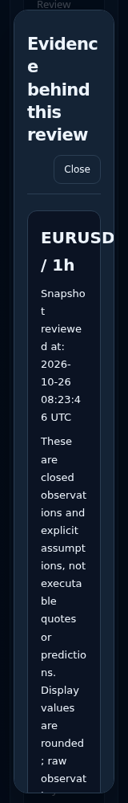
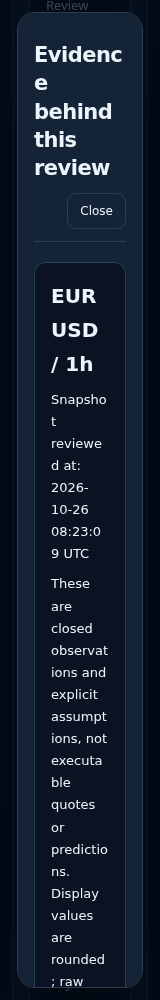

Native local captures at 160 CSS pixels with DejaVu Sans. This is an extreme zoom-equivalent width, not normal mobile sizing. Frozen provider fixtures; no model run or Production capture.
Context heading
Before: heading contributes to outer overflow

After: heading wraps within its panel

Metric labels
Before: two-column layout squeezes labels into vertical characters